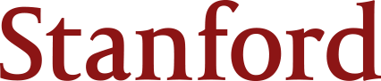
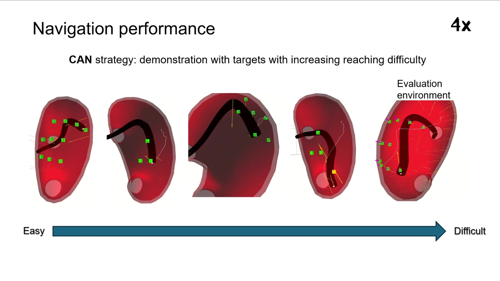
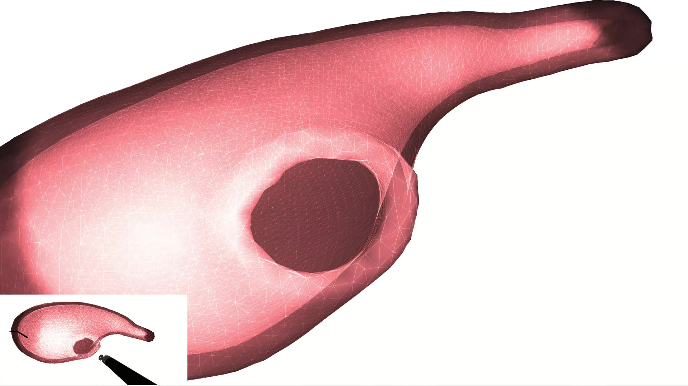

Force-informed policy
Contact force and robot state jointly condition continuous control.
Contact-rich control · Flexible endoscopy
Use contact as guidance, not simply as an obstacle.


ROBIO 2025
Why contact matters
A flexible endoscope cannot reach every gastric target through free-space bending and insertion alone. Contact with the stomach wall provides an external constraint that can support and redirect the endoscope.
CAN formulates this interaction as a reinforcement-learning problem. Force feedback becomes part of the policy observation, allowing the robot to exploit contact while navigating a moving, deformable stomach.
Contact force and robot state jointly condition continuous control.
A finite-element environment models deformation and physiological motion.
The trained policy is tested on new targets and stronger disturbances.
Simulation and learning
The stomach and endoscope are modeled in the SOFA physics engine using finite elements and real-time contact detection. The simulation includes breathing, heartbeat, and other motion that changes the geometry during navigation.
A Proximal Policy Optimization agent receives the tip-to-target relationship, robot velocity, cable lengths, contact state, and force feedback. It learns a five-dimensional continuous action for cable-driven navigation.

Paper presentation
The narrated video explains the contact-aided strategy, training environment, and navigation results.
Navigation performance
Success is defined as reaching within 3 mm of the target. CAN reaches 100% success in static and dynamic stomach environments with an average error of 1.6 mm. In unseen cases with stronger external disturbances, it maintains an 85% success rate.
Target tolerance used to define a successful trial.
Continuous control learned through reinforcement learning.
Physics-based deformation and contact simulation.
Publication
IEEE ROBIO 2025. DOI: 10.1109/ROBIO66223.2025.11376000.
@article{ng2025can,
title={Contact-Aided Navigation of Flexible Robotic
Endoscope Using Deep Reinforcement Learning
in Dynamic Stomach},
year={2025}
}